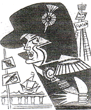

By ANON

It’s almost 200 years since Lord Nelson’s famous naval victory at the Battle of Trafalgar. To kick-start the anniversary celebrations this year, an actor dressed as Nelson posed for pictures on the river Thames at Greenwich However, before he was allowed on board an RNLI Lifeboat he was told to wear a lifejacket over the 19th century admiral’s uniform. How would Nelson have coped with modern health and safety regulations?
“Order the signal to be sent, Hardy”
“Aye aye, Sir.”
“Hold on – that’s not what I dictated to the signal officer. What’s the meaning of this?”
“Sorry Sir”
“England expects every person to do his duty, regardless of race, gender, sexual orientation, religious persuasion or disability. What gobbledegook is this?”
“Admiralty policy Sir. We’re an equal opportunities employer now. We had the devil’s own job getting “England” past the censors, lest it be considered racist.”
“Gadzooks Hardy, hand me my pipe and tobacco.”
“Sorry Sir, all naval vessels have been designated smoke free working environments.”
“In that case, break open the rum ration. Let’s splice the main brace to steal the men before battle.”
“The rum ration has been abolished, Admiral, because of government policy on binge drinking.”
“Good heavens Hardy! I suppose we’d better get on with it. Full speed ahead.”
“I think you’ll find that there’s a four-knot speed limit in this stretch of water.”
“Damn it man! We’re on the eve of the greatest sea battle in history. We must advance with all dispatch. Report from the crow’s nest please.”
“That won’t be possible Sir.”
“What!.”
“Health and safety have closed the crow’s nest, Sir. No harness, and they said the rope ladder doesn’t meet regulations. They won’t let anyone up there until proper scaffolding has been erected.”
“Then get me the ship’s carpenter without delay, Hardy.”
“He’s busy knocking up wheelchair access to the fo’c’sle, Admiral.”
“Wheelchair access, I’ve never heard anything so absurd.”
“Health and safety again, Sir. We have to provide a barrier-free environment for the differently abled.”
“Differently abled? I’ve only one arm and one eye and I refuse even to hear mention of the word. I didn’t rise to the rank of Admiral by playing the disability card.”
“Actually Sir, you did. The Royal Navy is under represented in the area of visual impairment and limb deficiency.”
“Whatever next? Give me full sail! The salt spray beckons.”
“A couple of problems there too, Sir. Health and safety won’t let the crew up the rigging without crash helmets, and they don’t want anyone breathing in too much salt, Haven’t you seen the adverts?”
“I’ve never heard such infamy. Break out the cannon and tell the men to stand by to engage the enemy,”
“The men are a bit worried about shooting anyone, Admiral.”
“What! This is mutiny!”
“It’s not that, Sir. It’s just that they’re afraid of being charged with murder if they actually kill anyone. There’s a couple of lawyers on board, watching everyone like hawks.”
“Then how are we to sink Frenchie and the Spaniards?”
“Actually, Sir, we’re not.”
“We’re not?”
“No Sir, Frenchie and the Spanish are our European partners now. According to the Common Fisheries Policy, we shouldn’t even be in this stretch of water. We could get hit with a claim for compensation.”
“You must consider every man an enemy who speaks ill of your King.”
“Not any more , Sir. We must be inclusive in the multicultural age. Now put on your Kaviar vest – it’s the rules.”
“Don’t tell me – health and safety. What happened to rum, sodomy, and the lash?”
“As I explained, Sir, rum is off the menu, and now there’s a ban on corporal punishment.
“What about sodomy?”
“I believe it’s to be encouraged, Sir.”
“In that case……KISS ME HARDY.”